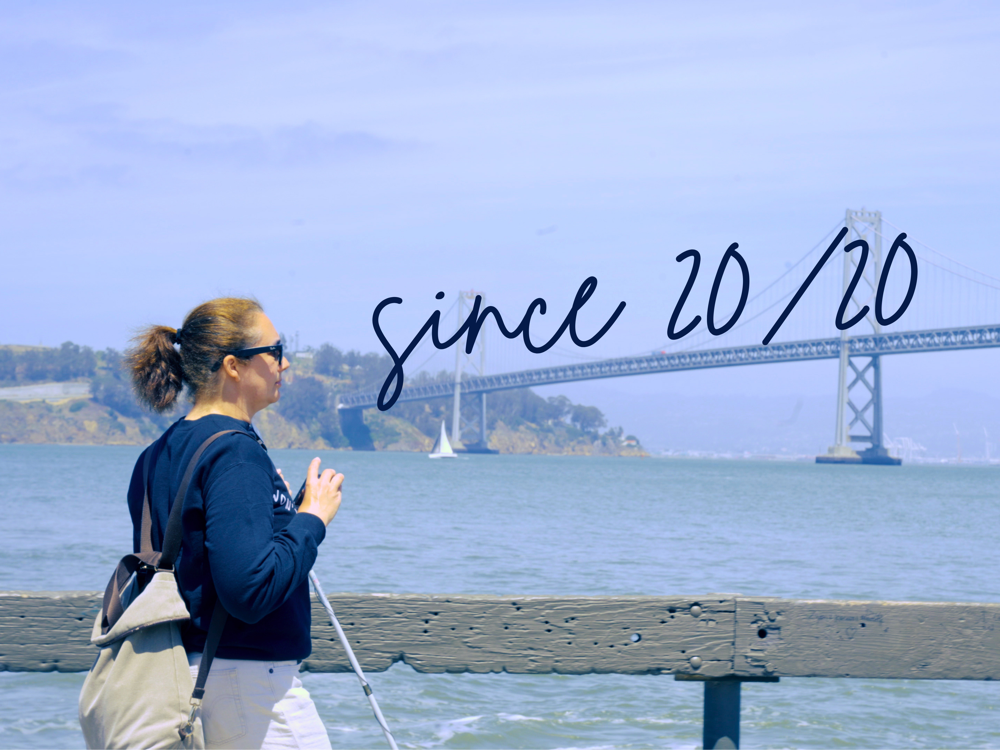

3rd Place · Hearst Nationals ▶
Short Film · AR · Game · 2026
Since 20/20
A short film, an AR simulation, and a game: one story told three ways. Dropped into San Francisco with a camera and three and a half days, I followed Amanda, who lost her vision in 2020, and built the experience around how she moves through the city.
Experience it ↗